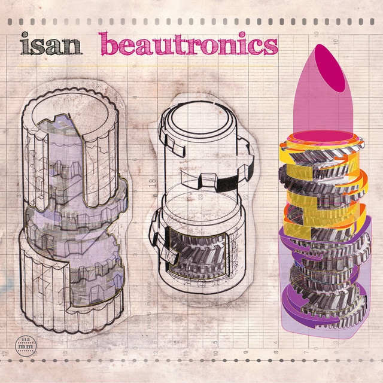

ISAN - Beautronics



Información del álbum facilitada por discogs.com:
Fecha de lanzamiento: 1998
Géneros: Electronic
Estilos: Abstract, IDM, Minimal
Pais: Portugal
Votos: Media de 4.4 con 5 votos
Sello: Creative Sources
Recorded At: Estudi 84
Mixed At: Estudi 84
Accordion, Photography By [Sleeve] - Alfredo Costa Monteiro
Mastered By - Joan Saura
Photography By [I Treni Inerti] - Pere Pratdesaba
Recorded By, Mixed By - David Casamitjana
Recorded By, Mixed By - Ferran Fages
Trumpet - Matt Davis
Trumpet - Ruth Barberán
Tracklist:
- Vosill 4:13
- Tint 1 - Barely Barley 1:27
- Paintchart 4:40
- Tint 2 - Rosy Apples 1:53
- Ampule 4:35
- Tint 3 - Clearly Caramel 1:33
- Bolselin 4:15
- Spinning Jennie 4:53
- Tint 4 - C’est Le Tempo 1:08
- Tint 5 - Glittery Disco Blue 1:10
- Skeek 4:40
- Tint 6 - Cheeky Cherry 0:54
- Iam Twisq 3:48
- Tint 7 - Bloody Mary 1:30
- Sublimation 4:41
- Anklet 3:39